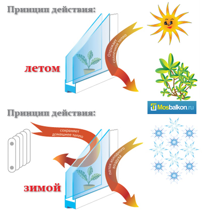

Об энергосберегающих окнах

В строительной сфере с недавних пор многое изменилось. Стало
актуальным энергосбережение и применение современных энергосберегающих
материалов при возведении новых домов. Давние владельцы частных домов и
квартир тоже заказывают фасадное утепление наружных стен, меняют
устаревшие деревянные окна на пластиковые системы. Потери тепла
сокращаются на 30-40%.
Это создает комфортные условия для жизни и позволяет существенно
уменьшить расходы на коммунальные услуги, сэкономить бюджет семьи.
Какими средствами достигается эффективная теплоизоляция?
Поскольку наибольшие потери тепла происходят через оконные проемы,
рассмотрим, существуют ли способы сделать окно энергосберегающим? К
современным пластиковым окнам предъявляют много требований — удобство в
эксплуатации, эстетичность, долговечность, но главным было и остается
требование к сохранению тепла в помещении. Строительные нормы по
теплосбережению окон ПВХ находятся в прямой зависимости от такого
показателя, как градусо-сутки отопительного периода, который
подсчитывается для разных климатических зон.
Второй важной характеристикой теплозащитных ограждающих конструкций
является коэффициент теплопроводности, который нетрудно подсчитать,
если знать данные, которые предоставляет производитель пластиковых окон:
сопротивление теплопередаче профиля и сопротивление теплопередаче
стеклопакета.
В системе окна стеклопакеты занимают большую площадь (около 80%), ,
теплоизоляция окон зависти от множество параметров. Например, какой
толщины стекло в стеклопакете? Существует 2-4 или 6м.м. стеклопакет,
количество камер может быть 2 или 3. А может быть и стеклопакет с разной
шириной камер. Давайте уделим особое внимание именно стеклопакетам и их
разновидностям.
Конструкция стеклопакета представляет собой несколько плотно
соединенных герметиком и специальной рамкой стекол. Пространство между
стеклами заполняется обычным воздухом или газами: криптоном, аргоном.
Наполнение газом повышает теплоизоляционные свойства пакета. Сборка
из двух стекол с одной воздушной камерой называется однокамерным
стеклопакетом, а из трех стекол и, соответственно, с двумя воздушными
камерами — двухкамерным.
Стекла, изготовленные по новым технологиям, подразделяются по
своему назначению на мультифункциональные, солнцезащитные и
энергосберегающие. Но любое из этих стекол может быть стандартным или
иметь дополнительные свойства, то есть быть закаленным или многослойным
(триплекс).
Чаще всего в металлопластиковых системах применяют стандартное
энергосберегающее стекло, и только для защиты от проникновения в дом или
квартиру, — триплекс или закаленное.
Виды энергосберегающих стекол, их достоинства и преимущества
По технологии производства энергосберегающие стекла делятся на два
вида, в зависимости от нанесенного на них покрытия. Это так называемое
k-стекло, производимое еще с 70-х годовпрошлого века, а также i-стекло,
созданное по более современной технологии с помощью магнетронных
распылительных систем. Оба вида стекол представляют собой
низкоэмиссионные Low-E-стекла, имеющие разную эффективность
энергосбережения. Одна из поверхностей таких стекол имеет специальное
покрытие, которое беспрепятственно пропускает в комнаты коротковолновую
составляющую солнечного излучения. При этом нагреваются предметы,
находящиеся в помещении. Одновременно покрытие отражает внутрь здания
исходящее от предметов инфракрасное (длинноволновое) излучение, тем
самым, исключая тепловые потери. Низкоэмиссионное покрытие стекла
энергосберегающего стеклопакета бывает «мягким» и «твердым». У k-стекла с
твердым напылением оксидов металлов несколько меньшая эффективность по
сохранению тепла, но есть технологические преимущества:
- сборка стеклопакетов дешевле по сравнению с имеющими «мягкое» покрытие благодаря отсутствию операции удаления полоски покрытия шириной 10 мм по периметру листа;
- возможность применения в одинарных окнах, тогда как i-стекло используется только в стеклопакетах;
- стойкость к механическим повреждениям;
- возможность подвергать k-стекло закаливанию и ламинированию для усиления теплозащиты;
- внешний вид и прочность k-стекла не уступают обычному и i-стеклу.

У представителя нового поколения стекол — i-стекла тоже достаточно
преимуществ. Несмотря на то, что оно уступает k-стеклу в прочности
напыляемой пленки («мягкий» способ напыления Double Low-E), и его
приходится очень бережно транспортировать, энергосберегающие свойства
этого суперстекла имеют высочайшие показатели. Поскольку
энергосбережение характеризуется низкой теплопередачей, то свойства
каждого из двух видов стекол с покрытием можно оценить собственным
коэффициентом эмиссии (E) — способностью отражать длинные тепловые волны
и пропускать короткие в помещение. Чем ниже значение E, тем больше
тепла сохраняет стеклопакет и пластиковое окно в целом. Если у обычного
стекла коэффициент эмиссии равен 0,835, то у селекционных стекол k и i —
0,2 и 0,04 соответственно. Это означает, что i-стекло, имеющее самый
низкий коэффициент, удерживает в доме до 90% тепла, что является
революционным достижением в стекольном производстве.
В Европе и Америке такое покрытие успешно используется. В России
пока такая продукция покупается за границей, поэтому энергосберегающие
окна имеют достаточно высокую стоимость, но значительное уменьшение
затрат на отопление при их применении быстро окупает расходы.
Обобщая
вышесказанное, можно добавить, что пластиковые окна с
энергосберегающими стеклопакетами имеют еще много преимуществ и
характеризуются:
- повышенным комфортом в помещении: если температура поверхности на внутренней части стекла у обычного стеклопакета составляет +4,7оС, то у стеклопакета с k-стеклом — +10,5оС, с i-стеклом — 14,7оС;
- по сравнению с двухкамерным стеклопакетом из обычного стекла, однокамерный стеклопакет с низкоэмиссионным Low-E стеклом имеет большую теплоизоляцию;
- однокамерный энергосберегающий стеклопакет легче по весу, чем 2-х камерный в 1,5 раза, поэтому срок службы фурнитуры увеличивается;
- однокамерные стеклопакеты даже из дорогого i-стекла дешевле 2-х камерного из обычного стекла, и вместе с будущим усовершенствованием эмиссионных стекол, эта разница будет увеличиваться. В последние годы такой процесс успешно начался: бельгийский концерн Glaverbel разработал новую технологию, которая позволяет закалять стекло с «мягким» энергосберегающим покрытием;
- энергосберегающий стеклопакет также долговечен, как и обычный, поскольку напыление находится внутри герметичного пространства;
- по сравнению с 2-х камерным стеклопакетом энергосберегающий однокамерный пропускает 80% видимого света против 74%, а вредного ультрафиолета — 35% против 45%;
- на 40% больше удерживается тепло двухкамерным пакетом с двумя энергосберегающими i-стеклами с расстоянием между ними не менее 10 мм, чем кладкой в два кирпича, — это самый теплый стеклопакет на сегодня.
Как отличить энергосберегающий стеклопакет от обычного.
В наше время, остекление балконов пользуется повышенным спросом. С
помощью пластикового остекления, можно сделать балкон функциональным
помещением. После остекления, как правило, следует внутренняя отделка и
утепление балконов и лоджий. Использование новых стеклопакетов позволяет
добиться меньших энерго-потерь, делая балконы теплее. Если ваша
квартира или балкон находится на солнечной стороне, то стеклопакет будет
работать на вас, создавая комфортную температуру. Принцип работы -
летом прохладно, зимой тепло!
Считается, что в ближайшие 5-10 лет именно такие стеклопакеты будет
применять вся Европа. Стоит ли нам отставать, если разработанные
материалы позволяют решать энергетические проблемы не только каждой
семьи, но и всей страны в целом.